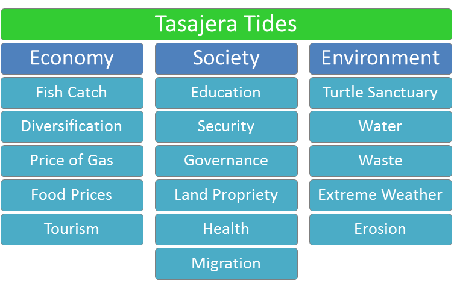

Indicators
What issues are important in Tasajera?
Theme Areas
Economy

Society
Environment
What are Indicators?
Mareas de Tasajera uses indicators to identify specific areas of interest within the community. Each indicator possesses data and/or a video story to provide relevant information regarding how a given issue affects community members individually as well as the community as a whole. These indicators are classified according to the following thematic framework:
The general theme for Mareas de Tasajera is sustainable community development. This idea is then broken down into three theme areas: Economy, Society and Environment. Indicators are classified within these theme areas based on the theme they affect most directly. It is important to note, however, that many indicators affect multiple theme areas. For example, the lack of a viable waste disposal system is chiefly an environmental issue, but it affects indicators in other theme areas such as health and tourism.
These indicators form an intertwined web of unbiased information about Tasajera and shed light on how different issues interact. This knowledge allows community members and actors within the community to make informed, integrated decisions regarding the development of the community. Although the system aims to house all information about the community in one place, it also decentralizes access to information capital. Relevant organizations are thus held accountable for the credibility of their information as well as the state of the community.
Tasajera Tides is always looking to improve the system’s capacity to provide relevant community information. If you have suggestions for the project, please don’t hesitate to contact us (insert hyperlink). Additional data sources are especially helpful.
This is Something
Sed tristique purus vitae volutpat ultrices. Aliquam eu elit eget arcu commodo suscipit dolor nec nibh. Proin a ullamcorper elit, et sagittis turpis. Integer ut fermentum.
Also Something
Sed tristique purus vitae volutpat ultrices. Aliquam eu elit eget arcu commodo suscipit dolor nec nibh. Proin a ullamcorper elit, et sagittis turpis. Integer ut fermentum.
Probably Something
Sed tristique purus vitae volutpat ultrices. Aliquam eu elit eget arcu commodo suscipit dolor nec nibh. Proin a ullamcorper elit, et sagittis turpis. Integer ut fermentum.